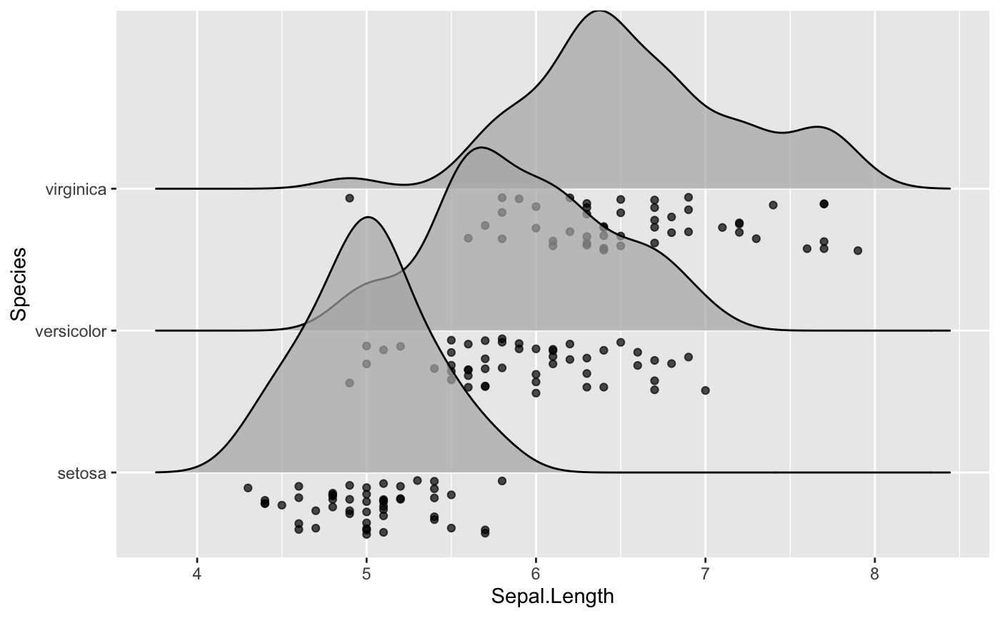

position_raincloud.RdThis is a position adjustment specifically for geom_density_ridges() and related geoms. It
only jitters the points drawn by these geoms, if any. If no points are present, the plot
remains unchanged. The effect is similar to position_points_jitter(), only that by default the
points lie all underneath the baseline of each individual ridgeline.
position_raincloud( width = 0, height = 0.4, ygap = 0.05, adjust_vlines = FALSE, seed = NULL )
| width | Width for horizonal jittering. By default set to 0. |
|---|---|
| height | Total height of point cloud. By default 0.4. |
| ygap | Vertical gap between ridgeline baseline and point cloud. |
| adjust_vlines | If |
| seed | Random seed. See |
The idea for this position adjustment comes from Micah Allen, who proposed this type of plot in a blog post on March 15, 2018.
Other position adjustments for ridgeline plots: position_points_jitter, position_points_sina
library(ggplot2) ggplot(iris, aes(x = Sepal.Length, y = Species)) + geom_density_ridges(jittered_points = TRUE, position = "raincloud", alpha = 0.7)#>